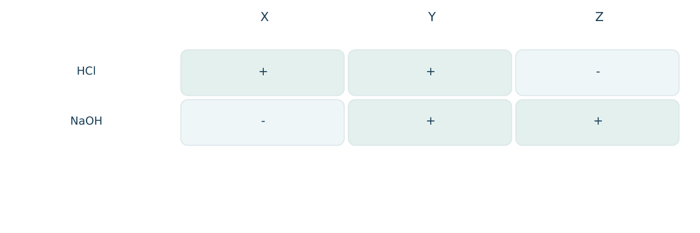
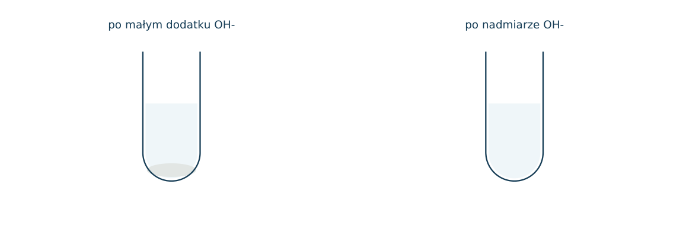
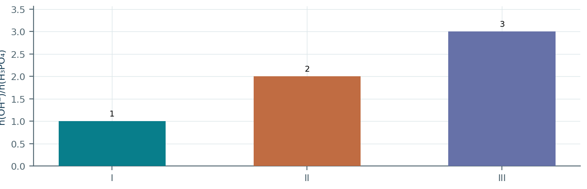
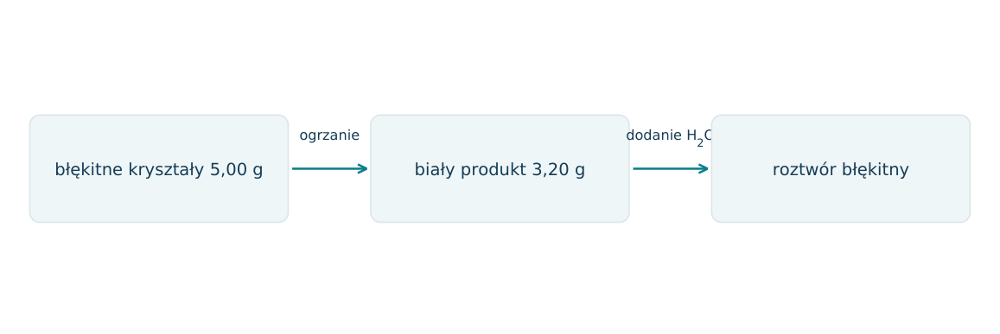
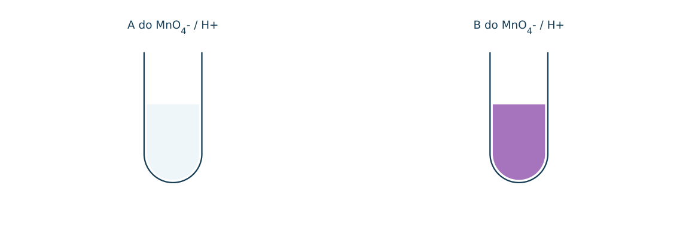
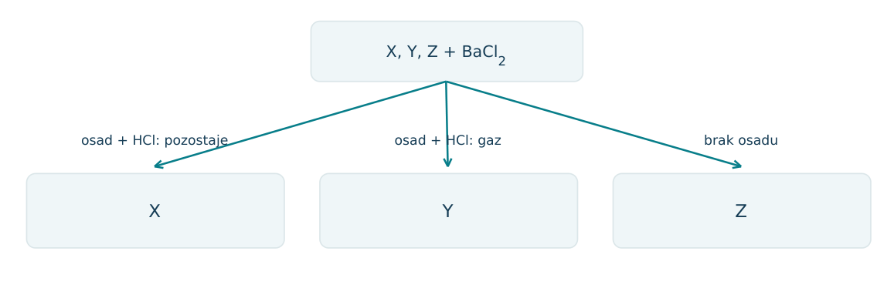
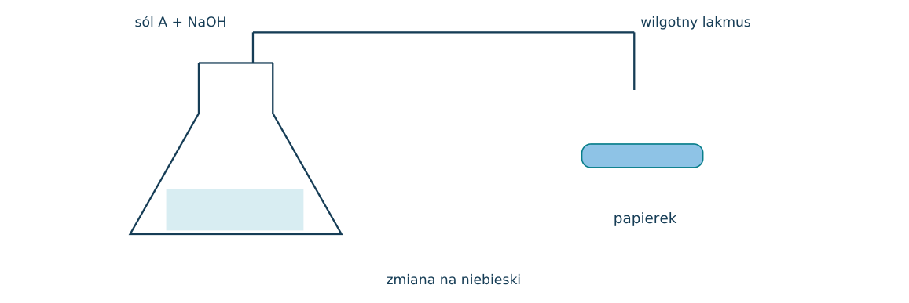
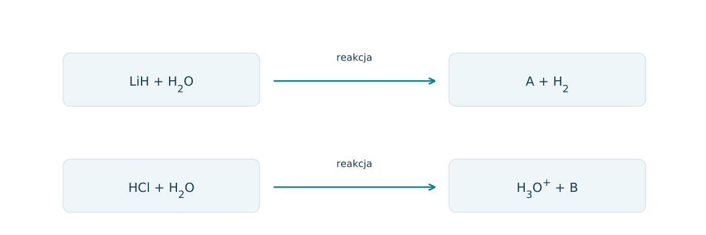
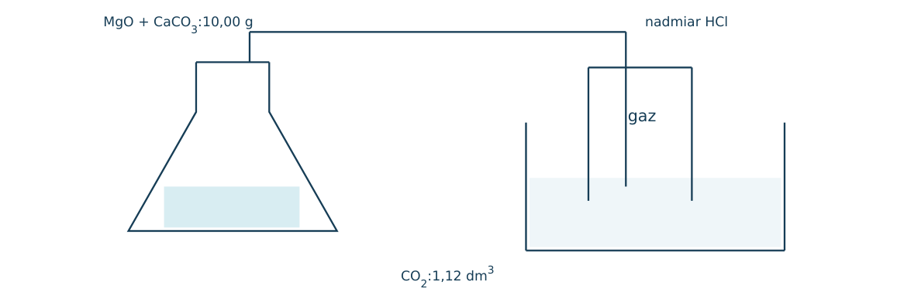

09.01 · 1 pkt
Napisz wzór związku: tlenek żelaza(III).
Rozwiązanie
- Fe2O3
50 zadań · 107 pkt · odpowiedzi rozwijane po samodzielnej próbie
← KatalogZadania PDFRozwiązania PDFDane do obliczeń: H 1; C 12; N 14; O 16; Na 23; Mg 24; Al 27; P 31; S 32; Cl 35,5; K 39; Ca 40; Cr 52; Mn 55; Fe 56; Cu 64; Zn 65; Ag 108; Br 80; I 127; Ba 137 (g/mol). NA = 6,02·1023 mol-1. Vm = 22,4 dm3/mol w warunkach normalnych (0°C, 1013 hPa). W 25°C Kw = 10-14. Dane podane w zadaniu mają pierwszeństwo.
Napisz wzór związku: tlenek żelaza(III).
Oceń zdania A i B, wpisując P albo F. Każde zdanie fałszywe popraw lub krótko uzasadnij. A: Al2O3 ma charakter amfoteryczny. B: Każdy tlenek nierozpuszczalny w wodzie jest chemicznie obojętny.
Napisz wzór związku: wodorowęglan sodu.
Napisz wzór związku: wodorofosforan(V) sodu.
Napisz wzór związku: diwodorofosforan(V) wapnia.
Napisz wzór związku: azotan(V) miedzi(II).
Podaj nazwy: Fe(OH)2, Na2SO3 i CaSO4·2H2O.
Wskaż hydrat, wodorosól i wodorotlenek: CuSO4·5H2O, KHCO3, KOH.
Przypisz charakter tlenkom: Na2O, SO3, Al2O3, CO.
Czy tlenek, który nie reaguje z wodą, musi być obojętny? Podaj kontrprzykład.
Napisz równanie reakcji: CaO z wodą. Podaj obserwację.
Napisz równanie reakcji: SO3 z wodą. Podaj obserwację.
Napisz równanie reakcji: CuO z rozcieńczonym HCl. Podaj obserwację.
Napisz równanie reakcji: CO2 z wodą wapienną, bez nadmiaru gazu. Podaj obserwację.
Napisz równanie reakcji: Al(OH)3 z HCl. Podaj obserwację.
Napisz równanie reakcji: Al(OH)3 z nadmiarem wodnego NaOH; przyjmij kompleks tetrahydroksoglinianowy. Podaj obserwację.
Napisz równanie reakcji: NH4Cl z NaOH po łagodnym ogrzaniu. Podaj obserwację.
Napisz równanie reakcji: Na2CO3 z HCl. Podaj obserwację.
Napisz równanie reakcji: CuSO4 z NaOH, bez nadmiaru zasady. Podaj obserwację.
Napisz równanie reakcji: rozkład Cu(OH)2 podczas ogrzewania. Podaj obserwację.
Napisz równanie reakcji: rozkład CaCO3 podczas silnego ogrzewania. Podaj obserwację.
Napisz równanie reakcji: LiH z wodą. Podaj obserwację.
Napisz równanie jonowe reakcji ZnO z nadmiarem wodnego OH-. Przyjmij [Zn(OH)4]2-.
Zaprojektuj dwa doświadczenia wykazujące amfoteryczność Zn(OH)2. Podaj obserwacje.
Wyjaśnij różnicę między zasadą a wodorotlenkiem w szkolnej klasyfikacji substancji.
Przyporządkuj charakter wodorków w wodzie: HCl, NH3, CH4.
Napisz reakcję HCl z wodą wykazującą kwasowy charakter chlorowodoru.
Czy kwas beztlenowy jest zawsze słabszy od tlenowego? Podaj kontrprzykład.
Napisz dwa równania prowadzące od NaOH do Na2CO3, a następnie do NaHCO3, używając CO2.
Napisz dwa sposoby otrzymania MgCl2: z metalu i z tlenku, stosując HCl.
Napisz reakcję otrzymywania H3PO4 z tlenku fosforu(V) o wzorze P4O10.
Ile moli NaOH zużywa 0,10 mola H3PO4 przy otrzymywaniu wyłącznie Na2HPO4?
Do roztworu NaOH wprowadzano CO2. Najpierw powstawał Na2CO3, później NaHCO3. Podaj stosunki n(CO2):n(NaOH) dla wyłącznego otrzymania każdej soli.
Próbka białego tlenku rozpuszcza się w HCl i w NaOH, ale nie w wodzie. Podaj przykładowy wzór i uzasadnij charakter.
Napisz równanie jonowe reakcji siarczanu(IV) sodu z mocnym kwasem.
Na podstawie stopnia utlenienia Mn przewidź charakter MnO i Mn2O7.
Tlenek X nie reaguje z wodą, lecz z HCl daje CuCl2. Osad ma barwę czarną. Ustal X i napisz równanie.
Jak rozróżnić wodne roztwory HCl, NaOH i NaCl jednym wskaźnikiem? Podaj odczyn i oczekiwaną barwę wskaźnika uniwersalnego.
Napisz wzór hydroksychlorku magnezu zawierającego jedną grupę OH na Mg. Zapisz reakcję jego pełnego zobojętnienia HCl.
W roztworze są Na+, Ba2+, Cl- i NO3-. Czy samo zmieszanie roztworów NaCl i Ba(NO3)2 daje reakcję jonową skróconą? Uzasadnij.
Każdy numer 41-50 oznacza jedno zadanie główne; podpunkty są oceniane osobno.
Badano tlenki CuO, Al2O3 i SiO2, oznaczone losowo X, Y, Z. Macierz pokazuje wyniki reakcji z HCl oraz NaOH; dla SiO2 zastosowano stapianie z NaOH. Plus oznacza reakcję, minus jej brak w opisanych warunkach szkolnych.

09.41.1 (2 pkt) Zidentyfikuj tlenki i przypisz ich charakter chemiczny.
09.41.2 (2 pkt) Napisz reakcję X z HCl i Z ze stopionym NaOH.
09.41.3 (1 pkt) Dlaczego brak reakcji Z z wodą nie przeczy jego kwasowemu charakterowi?
X=CuO zasadowy; Y=Al2O3 amfoteryczny; Z=SiO2 kwasowy.
CuO+2HCl→CuCl2+H2O; SiO2+2NaOH→Na 2SiO3+H2O.
Charakter kwasowy wynika m.in. z reakcji z zasadą, a nie z obowiązku reagowania z wodą.
Do roztworu AlCl3 wkraplano NaOH. Schemat pokazuje stan po niewielkim dodatku oraz po dużym nadmiarze zasady. Przyjmij, że końcowy kompleks ma wzór [Al(OH)4]-.

09.42.1 (2 pkt) Zapisz jonowe równania obu etapów.
09.42.2 (1 pkt) Oblicz minimalne n(OH-) potrzebne do przekształcenia 0,020 mola Al3+ wyłącznie w kompleks końcowy.
09.42.3 (1 pkt) Wyjaśnij, dlaczego samo pojawienie się białego osadu nie wystarcza do rozpoznania Al3+ w nieznanej próbce.
Al3++3OH-→Al(OH)3(s); Al(OH)3+OH-→[Al(OH)4]-.
Łącznie 4 OH- na Al: 0,080 mola.
Białe osady tworzą też inne kationy, np. Zn2+ i Mg2+; potrzebne dodatkowe próby.
Trzy próbki zawierały po 0,100 mola H3PO4. Dodano odpowiednio 0,100;0,200;0,300 mola NaOH. Wykres podaje stosunek n(OH-)/n(kwasu). Na tym etapie rozpatruj przede wszystkim skład stechiometryczny soli.

09.43.1 (2 pkt) Napisz wzory głównych soli w I-III i nazwij sole z I i II.
09.43.2 (1 pkt) Zapisz równanie cząsteczkowe otrzymywania soli II.
09.43.3 (1 pkt) Wyjaśnij, dlaczego wodorosól nie musi dawać kwaśnego roztworu. Podaj rolę HPO42- wobec wody.
I: NaH2PO4, diwodorofosforan(V) sodu; II: Na 2HPO4, wodorofosforan(V) sodu; III: Na 3PO4.
H3PO4+2NaOH→Na 2HPO4+2H2O.
HPO42- może przyjmować proton: HPO42-+H2O⇌H2PO4-+OH-; obecność H w anionie nie rozstrzyga odczynu.
Błękitną próbkę soli CuSO4·xH2O o masie 5,00 g ogrzano bez rozkładu anionu do 3,20 g białej soli bezwodnej. Po dodaniu wody wraca błękitne zabarwienie. Przyjmij M(CuSO4)=160 g/mol.

09.44.1 (2 pkt) Oblicz x i podaj wzór hydratu.
09.44.2 (1 pkt) Napisz równanie odwodnienia i nazwij bezwodną sól.
09.44.3 (1 pkt) Czy odtworzenie błękitnej barwy oznacza zmianę stopnia utlenienia Cu? Uzasadnij.
n(CuSO4)=0,0200 mol; n(H2O)=1,80/18=0,100 mol; x=5.
CuSO4·5H2O→CuSO4+5H2O; siarczan(VI) miedzi(II).
Nie; Cu pozostaje +II, zmienia się jego otoczenie i uwodnienie.
W probówce ogrzano 18,80 g bezwodnego Cu(NO3)2. Powstał czarny CuO oraz gazy NO2 i O 2. Na schemacie zaznaczono, które produkty opuszczają probówkę. M(Cu(NO3)2)=188 g/mol. W obliczeniach pomiń dimeryzację NO2.
09.45.1 (2 pkt) Zbilansuj równanie rozkładu.
09.45.2 (1 pkt) Oblicz masę CuO przy pełnym przereagowaniu i M(CuO)=80 g/mol.
09.45.3 (1 pkt) Oblicz stosunek molowy gazów oraz ich łączną objętość w warunkach normalnych.
2Cu(NO3)2→2CuO+4NO2+O 2.
n soli=0,100 mol, m(CuO)=8,00 g.
NO2: O 2=4: 1; n gazów=0,250 mol, V=5,60 dm3. Traktuj NO2 jako monomer w zadanym modelu, pomijając dimeryzację.
Po dodaniu HCl do dwóch białych soli wydzieliły się bezbarwne gazy A i B. A odbarwia zakwaszony MnO4-, B nie odbarwia. Oba mogą zmętnić wodę wapienną przy ograniczonej ilości gazu. Sole wybrano z Na 2SO3 i Na 2CO3.

09.46.1 (2 pkt) Ustal gazy oraz odpowiadające im sole i uzasadnij rozróżnienie.
09.46.2 (2 pkt) Zapisz oba jonowe równania wydzielania gazu.
09.46.3 (1 pkt) Czy samo zmętnienie wody wapiennej byłoby jednoznacznym dowodem CO2?
A=SO2 z Na 2SO3, reduktor; B=CO2 z Na 2CO3, C na +IV nie redukuje MnO4- w tej próbie.
SO32-+2H+→SO2+H2O; CO32-+2H+→CO2+H2O.
Nie; w podanym zestawie także SO2 daje słabo rozpuszczalny siarczan(IV) wapnia.
Roztwory X, Y, Z zawierają odpowiednio jeden z anionów Cl-, SO42-, CO32-. Po dodaniu BaCl2 do X i Y powstały białe osady. Osad X nie zniknął po HCl, a Y rozpuścił się z wydzieleniem gazu. Z nie dał osadu.

09.47.1 (2 pkt) Przypisz aniony do X, Y, Z.
09.47.2 (2 pkt) Napisz jonową reakcję powstawania osadu X i rozpuszczania osadu Y.
09.47.3 (1 pkt) Po co przeprowadza się drugą próbę z HCl zamiast poprzestać na kolorze osadu?
X: SO42-; Y: CO32-; Z: Cl-.
Ba2++SO42-→BaSO4(s); BaCO3+2H+→Ba2++CO2+H2O.
Białe osady mogą mieć różny skład; zachowanie wobec kwasu odróżnia węglan od siarczanu(VI).
Biała sól A ma M=53,5 g/mol i po ogrzaniu z NaOH uwalnia gaz zmieniający wilgotny czerwony lakmus na niebieski. W oddzielnej próbie AgNO3 strąca z roztworu A biały AgCl. Badano 0,535 g soli.

09.48.1 (2 pkt) Ustal wzór A i napisz równanie uwalniania gazu.
09.48.2 (1 pkt) Oblicz teoretyczne n gazu i jego objętość po przeliczeniu na warunki normalne.
09.48.3 (1 pkt) Dlaczego zbieranie NH3 nad wodą może zaniżyć ilość zebranego gazu?
NH4Cl; NH4Cl+NaOH→NH3+NaCl+H2O.
n(NH3)=0,535/53,5=0,0100 mol; V=224 cm3.
NH3 bardzo dobrze rozpuszcza się w wodzie i częściowo z nią reaguje; znaczna ilość pozostanie w cieczy.
Porównano reakcje LiH i HCl z wodą. W pierwszej wydziela się H2 i powstaje zasadowy roztwór, w drugiej powstaje roztwór kwaśny. Schemat podaje substraty, ale nie produkty rozpuszczone w wodzie.

09.49.1 (2 pkt) Ustal A i B oraz zapisz oba równania.
09.49.2 (1 pkt) Porównaj stopnie utlenienia H w LiH, HCl i H2.
09.49.3 (1 pkt) Wyjaśnij, dlaczego przypisanie wszystkim wodorkom jednakowego charakteru jest błędne.
A=LiOH, B=Cl-; LiH+H2O→LiOH+H2; HCl+H2O→H3O++Cl-.
Odpowiednio -I,+I,0.
Wodorki jonowe, kwasowe cząsteczkowe i obojętne różnią się budową i reakcjami z wodą; LiH i HCl dają przeciwne odczyny.
Mieszanina MgO i CaCO3 ma masę 10,00 g. Z nadmiarem HCl wydzieliła 1,12 dm3 CO2 w warunkach normalnych. MgO również się rozpuścił, lecz bez tworzenia gazu. Rysunek pokazuje końcowy roztwór i odebrany gaz.

09.50.1 (2 pkt) Oblicz masy obu składników.
09.50.2 (2 pkt) Zapisz oba równania reakcji z HCl.
09.50.3 (1 pkt) Oblicz minimalną liczbę moli HCl potrzebną do całej próbki, M(MgO)=40 g/mol.
n(CaCO3)=0,0500 mol, m=5,00 g; m(MgO)=5,00 g.
CaCO3+2HCl→CaCl2+CO2+H2O; MgO+2HCl→MgCl2+H2O.
0,100 mola na CaCO3 +2·(5/40)=0,250 na MgO; łącznie 0,350 mola.